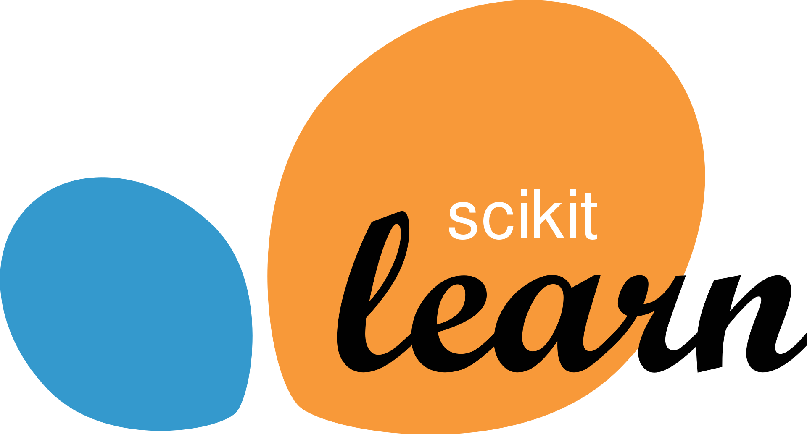

About
Data Scientist with Extensive Consulting Experience and Strong Foundation in Machine Learning and Data Mining Techniques
Results-driven Data Scientist with a robust background in client services and consulting, demonstrating a proven track record in driving data pipeline remediation efforts, conducting user acceptance testing, and effectively managing stakeholders in high-profile projects for large multinational companies. Proficient in utilizing advanced data mining and machine learning methods to derive actionable insights. Demonstrates adaptability and self-motivation, with a keen ability to swiftly learn and master new tools, methodologies, and concepts.
Work Experience
BankUnited | May 2024 - Present
AI/ML Solutions Engineer
I architect AI/ML solutions across BankUnited, partnering directly with department heads and subject matter experts to design, build, and deploy AI applications that automate complex business workflows. This role spans the full stack — from LLM orchestration and agent design to frontend development and cloud-native deployment on AWS.
Design and deploy AI solutions across the bank, partnering with department heads and SMEs to scope requirements and deliver end-to-end AI applications for multiple business units.
Developed an enterprise RAG knowledge system for client services using Claude LLMs with Bedrock Knowledge Bases (Kendra GenAI indices), implementing embedding strategies, retrieval optimization, and prompt engineering via few-shot learning and Chain-of-Thought reasoning, reducing manual workloads by 42%.
Architected and deployed a multi-agent credit analysis platform (Strands Agents SDK) using a hub-and-spoke pattern with specialized financial analyst, risk assessment, and industry benchmarking agents, significantly reducing credit analysis cycle time and accelerating Credit Approval Memorandum drafting.
Engineered an intelligent document processing pipeline that classifies and extracts structured data from financial documents (SEC filings, audited reports, pro-forma statements, commercial real estate statements) via schema-based extraction mapped to a classification-driven registry.
Integrated internal credit policy knowledge bases and third-party industry data APIs (IBISWorld) into the agentic workflow, enabling automated risk narrative generation benchmarked against bank policy and peer group performance.
Built scalable data ingestion and transformation pipelines using AWS (S3, Glue, Redshift, Lambda, Step Functions), improving data availability and analytics efficiency across business units.
Delivered full-stack AI applications with Python/Flask backends and JavaScript/Node.js frontends, containerized with Docker, deployed on EC2 via ECR, served behind an application load balancer, and automated through GitHub Actions CI/CD pipelines.
Spearheaded cross-selling analytics for Treasury Solutions using Apriori affinity analysis and classification models (XGBoost, Random Forest; 87% accuracy, 0.93 AUC), generating product recommendations for 34% of customers.
Ernst & Young, LLP (EY) | June 2021 - June 2023
Technology Consultant, Regulatory Reporting Solutions
Worked with Tier 1 banking clients on regulatory compliance and data quality initiatives, building data engineering solutions that improved reporting accuracy and operational reliability.
Supported a Tier 1 U.S. bank's migration of its Liquidity Risk Management ETL system to a next-generation Federal Reserve regulatory report format as part of a cross-functional engagement team.
Authored data lineage documentation tracing flows from source systems through ETL layers to report outputs, supporting audit readiness and data governance controls.
Reviewed and optimized client SQL DDL and ETL logic, identifying transformation discrepancies and implementing corrections at scale.
Conducted working sessions with stakeholders to capture data requirements, validate transformation logic, and align deliverables to regulatory specifications.
Education
Master of Science, Data Science
Fordham University (Graduated 2021)
-
Advanced Certificate in Financial Econometrics and Data Analysis
Bachelor of Science, Finance & Business Economics
Fordham University (Graduated 2020)
Certifications
AWS Certified Machine Learning Engineer - Associate
Issued by: AWS
-
Issued: June 2025
Machine Learning Specialization
Issued by: Stanford University / DeepLearning.AI
-
Issued: December 2023
Tech Stack

Using these tools and many more, I architect and deploy production-grade AI & ML systems that automate complex workflows, deriving actionable insights, and drive measurable business outcomes in financial services.